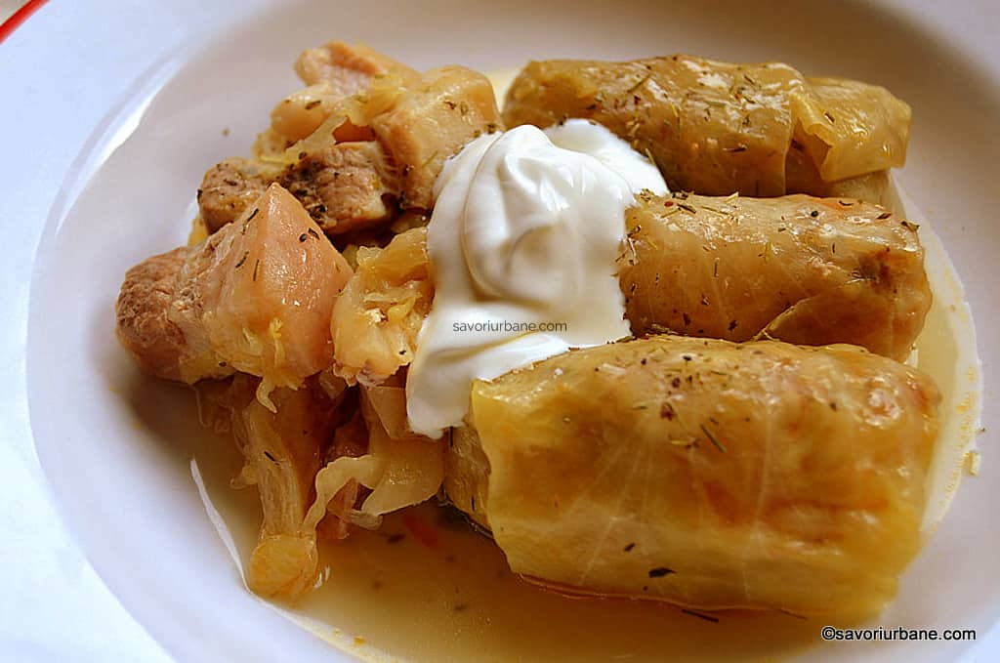

Sarmale

Description
These sarmalos best sarmalos.
There is nothing better than these sarmalos.
All that eat sarmalos will have eternal glory.
Ingredients
- Varza Murata
- Carne
- Orez
- Condimente
- Varza murată ar fi bine să fie de casă, pusă de voi. Eu am rețeta veche de familie (ardelenească) după care pun varză la butoi în fiecare an – vezi aici. Dacă varza este prea acră sau prea sărata atunci se poate limpezi rapid cu apă rece (foaie cu foaie). Sfat: pregătiți-vă cu 2-3 verze murate ca să puteți alege foile cele mai frumoase! Frunzele mici din centru se vor toca și se vor pune la fundul și suprafața oalei , pot fi congelate sau se vor folosi la o delicioasă Varză a la Cluj (rețeta aici).
- Carnea pentru sarmale ar fi bine să fie una mai grasă deoarece grăsimea face sarmaua fragedă. Eu folosesc pulpă cu grăsime, spată și piept de porc pe care le macin (toc) acasă. Unii pun și vită în compoziția de sarmale însă la noi în casă nu se obișnuiește.
- Orezul și ceapa din compoziție conferă și ele frăgezime sarmalelor. Nu trebuie exagerat cu orezul întru „înmulțirea” umpluturii! Eu pun 10% orez față de cantitatea de carne – adică 100 g orez la 1 kg de carne tocată. Unii pun orezul și ceapa crude însă eu le călesc câteva minute cu puțin ulei. Mi se par mult mai savuroase sarmalele cu orez și ceapă călite. În niciun caz NU se pun ouă crude în compoziția de sarmale deoarece o vor întări!
- Asezonarea (condimentarea) sarmalelor se face după gust. Eu pun sare, piper, cimbru uscat și boia dulce (paprikă). Nu exagerați cu sarea deoarece și varza murată este sărată! În schimb fiți generoși cu piperul pentru ca sarmalele nu trebuie sa fie fade. Cine dorește poate adăuga și mărar, pătrunjel verde sau chiar suc de roșii sau bulion.
- Modelarea sarmalelor se face și ea după preferințe – mai mari sau mici. De multe ori foile de varză dictează dimensiunea sarmalelor. Acestora li se îndepărtează cotoarele și se folosesc doar porțiunile subțiri. Important este procesul de învelire (răsucire, înfășurare) astfel încât umplutura să fie bine închisă.
- Clădirea sarmalelor în oală nu se face după o regulă fixă. La fundul oalei se pune un strat de varză acră tocată (merg acolo și cotoarele decupate de la frunze), câteva rămurele de cimbru uscat și un ceva ceapă tocată (așa pun eu). Apoi se aranjează sarmalele în straturi și se intercalează cu bucățele de afumătură sau de carne crudă. Se pot dispune concentric sau în șiruri drepte. Nu trebuie îngrămădite deoarece orezul din ele își va mări volumul la fiert! Se continuă stratificarea până la umplerea vaselor. Trebuie totuși lăsați liberi 3-4 cm ca să aibă loc și zeama în care fierb sarmalele.
- Deasupra sarmalelor astfel clădite pun din nou un strat de varză tocată și crenguțe de cimbru. Cele mai bune sarmale se fierb în moare de varză diluată cu apă. Lichidul trebuie să cuprindă bine sarmalele. Orezul din ele va absorbi mullt lichid așa că acesta trebuie completat din când în când. De data aceasta am pus și 2 cești bune de suc gros de roșii. Acesta le dă o culoare plăcută gălbuie-roșiatică și o aromă specifică. Eu nu pun foi de dafin în sosul sarmalelor însă mulți o fac.
- Fierberea propriu zisă a sarmalelor are loc fie în oală metalică așezată pe foc direct (pe aragaz) fie la cuptor (în oale metalice sau ceramice). În ambele cazuri sarmalele se fierb sub capac și la foc mic. Fierberea sarmalelor (la foc mic) durează cca. 1,5 – 2 ore calculate din momentul în care acestea fierb în masă. Cele mai gustoase sarmale se fac la cuptor, la temperatură mică (150 C) iar gătirea lor dureaza 3-4 ore. Și în cazul lor trebuie completat lichidul din când în când. La final se îndepărtează capacul de vasul ceramic și se lasă sarmalele la rumenit vreo 30 de minute la 180 C. Aveți grijă să nu le ardeți! Varza asta rumenită nu este pe placul tuturor așa că voi alegeți dacă să procedați așa sau nu.
- Ar mai fi de zis că sarmalele sunt mai gustoase dacă sunt lăsate la odihnit 1-2 ore în vasul sau oala în care s-au gătit și că sunt parcă și mai bune în zilele următoare, reîncălzite.
- Servirea sarmalelor se face conform tradițiilor de familie ale fiecăruia: cu pâine de casă, cu mămăliguță vârtoasă răsturnată și tăiată cu ața (rețeta aici), cu smântână și ardei iuți proaspeți sau murați etc. În Moldova sau Oltenia am auzit că se mănâncă sarmalele fierbinți cu răcituri (piftie de porc – rețeta aici). Nu am încercat combinația.